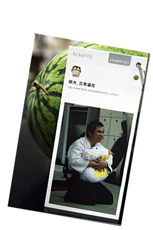

先生 - 在日文裡面即是指老師、師範的意思
貍貓是台灣師大合氣道社為 陳昌平師範所塑造的形象
貍貓先生一詞代表我們對師範的情感，也呼應其平易近人的行事風格
您/你，是陳昌平師範的前輩、道友、朋友
是他的uke、助教、學生，曾經被他摔過、罵過、也許還被拍過大頭照
記得那些他與你、與合氣道的小故事，甚至習慣跟口頭禪，以及更多更多…
我們每個人都擁有 陳昌平師範的其中一部份
為了記憶師範永遠的笑容跟身影 複習師範的每一句叨念跟提醒
我們聚在一起，和大家分享每個人記憶中的陳昌平師範，一起收集最完整的狸貓先生
即使他已經離開，卻從來不曾走遠。
國立台灣師範大學合氣道社